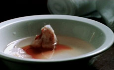

Oliver Pietsch

Blood | 2011 | 3'20''
Who's afraid of red? Ein kontemplatives Found-Footage-Video zu Vangelis "La Petite Fille de la Mer", das auf Filmblut basiert.
Oliver Pietsch, geb. 1972 in München, lebt in Berlin. Studium an der Kunstakademie in München und Berlin.
Filme (Auswahl): Maybe Not (UNDERDOX 01) 2005 | Domin, Libra Nos (UNDERDOX 02) 2006 | Love Comes To Me 2007 | The Shape of Things (UNDERDOX 03), Because (UNDERDOX 03) 2008 | From Here to Eternity (UNDERDOX 05) 2010 | Blood 2011